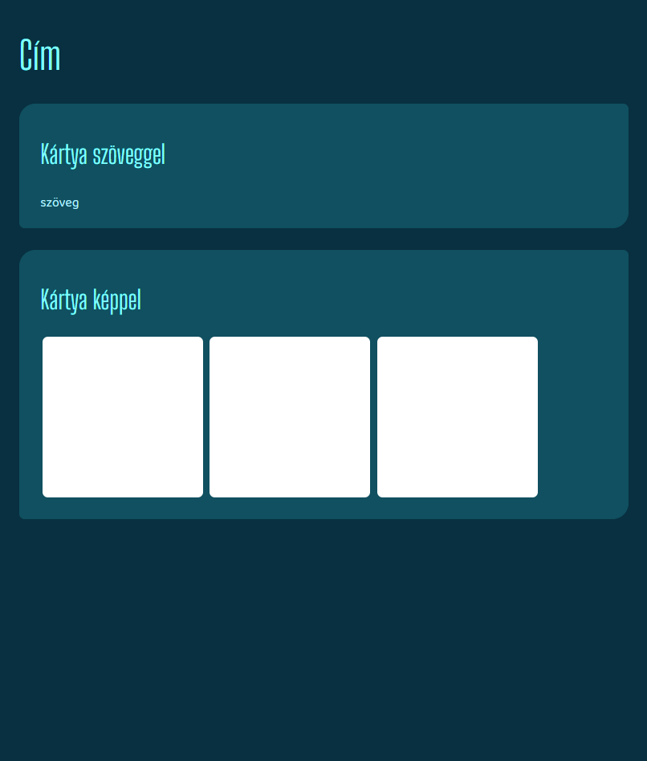

Kezdeti terv

Mivel pontosan nem tudtam, hogy milyen megjelenést leszek képes leprogramozni és mi mutat túl a
lehetőségeimen, ellentétben a bemutatkozó szöveggel, nagyon kevés grafikai elemet terveztem meg előre. Amit
biztosan tudtam, az az volt, hogy kékes színsémát szeretnék, és mindenképpen kártyaszerű, lekerekített
hátteret kívántam adni a megjelenő tartalomnak. Hasonló okból nem szerepel a képen a navigációs sáv és az
elérhetőség, mivel ezeknél sem tudtam tervezéskor, hogy mennyire tudom majd őket testreszabni.